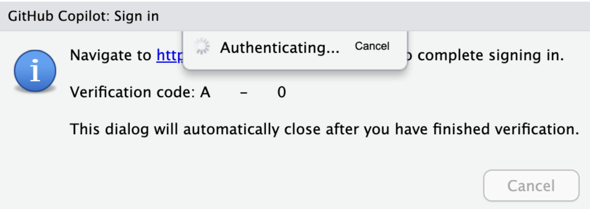

# q: QUESTION
# a: Rstudio에서 Copilot을 활용해 AI로 코딩하기
1. Github Copilot이란?

Github Copilot은 OpenAI의 GPT-3를 기반으로 만들어진 AI 코딩 도우미로, Github에 있는 수많은 “Public Repository”의 코드들을 학습하여, 자동 완성 형태의 제안을 통해 사용자의 코드 제작을 돕습니다.
Github에는 코드도 있지만, README와 같은 여러 종류의 설명 글 또한 있기 때문에 Copilot에서는 아래 이미지처럼 (Quarto로 블로그 작성) 다양한 종류의 자동 완성을 제공합니다.

2. chatGPT와의 차이점
Microsoft의 설명에 따르면 chatGPT는 자연어 처리 기술로, Microsoft 365 Copilot은 코드 생성 기술로 설명하고 있습니다. (Microsoft 365 copilot과 github copilot은 살짝 다르긴합니다.)
즉, chatGPT는 자연어 처리 기술을 통해 사용자의 질문에 대한 답변을 생성하는 것이 주 역할입니다.
따라서 chatGPT는 아래 작업 용도로 활용되기도 합니다.
- 에세이, 이메일 및 커버 레터 작성
- 목록 만들기
- 예술에 대해 자세히 설명
- 코드 작성
- 콘텐츠 요약
- 시와 노래 가사 만들기
- 이력서 작성
한편 Copilot은 Github에서의 학습을 바탕으로 코드 스니펫을 제공하는 것에 더 큰 장점을 가지고 있습니다.
코드 스니펫이란 아래 이미지처럼 자주 사용되는 조각 코드를 미리 작성해 놓은 것을 말합니다.

얼핏보면 큰 차이가 없어보이지만, chatGPT는 최근의 기술은 잘 반영하지 못한다는 단점이 있습니다. 또한 Copilot은 IDE (Rstudio)에서 바로 사용할 수 있다는 장점도 있습니다.
어느 것이 좋다/나쁘다 라기보단 서로 다른 특징을 가지고 있기에, 두 방법 모두를 필요한 목적에 따라 적절히 활용하는 것을 권장합니다.
3. Github Copilot을 사용하기 위한 준비
Copilot을 사용하기 위해서는 몇가지 준비가 필요합니다.
이 글에서는 Github 에서의 Copilot 결제를 비롯한 요금제에 대해서는 설명하지 않습니다.
- Github 개인 계정 (무료)
- IDE (코드 에디터) - VS Code, Rstudio 등. 글에서는 Rstudio를 기준으로 설명
- Github Copilot 가입 (첫 한달은 무료, 이후 월 10달러의 유료, Pricing 참조)
Copilot의 공식 홈페이지에서 설명이 제공하는 개발 도구는 Azure Data studio, JetBrains IDEs, Vim/NeoVim, Visual Studio, Visual Studio Code가 있지만 다행히 Rstudio에서도 사용가능합니다.

현재는 Rstudio Desktop 2023.09.0 이상 버전에서만 사용 가능하며 Rstudio Server나 Posit Workbench에서는 관리자 설정 이후 사용 가능합니다.
버전을 확인하기 위해서는 Rstudio에서 Help > About Rstudio를 클릭하면 됩니다.
4. Rstudio에서 Github Copilot 사용 설정
이후 Copilot 설정 과정은 다음과 같습니다.
- Rstudio에서
Tools > Global Options > copilot을 클릭합니다.

- “Enable Github Copilot”을 체크합니다.

- “Sign in”을 클릭합니다.

- 이후 나타나는 Device Activation에 Rstudio에서 보여지는 코드를 입력합니다.

- 이제 Github Copilot을 사용할 수 있습니다.

5. Github Copilot 사용하기
Copilot은 "Ghost text"라고 불리는 방법으로 사용자의 코드를 자동 완성합니다.
앞서 본 gif 이미지나, 아래의 예시처럼 코드의 일정 부분을 작성하면 나머지 부분을 회색으로 보여주어 탭 키를 누르는 것으로 완성할 수 있습니다.

- Copilot이 인지할 코드: 이때 꼭 주석으로 하지 않아도 이전 코드를 기반으로 copilot이 자동으로 제안합니다.
- Copilot이 제안하는 코드: 회색으로 보여지는 부분이 제안되는 부분입니다.
- Copilot 상태바:
Waiting for Completions(대기),Completion response received(코드 제안 완료),No completions available(제안 없음) 등의 상태를 보여줍니다.
한편 상태바 옆의 언어 설정을 통해 어떤 코드를 자동생성할지 설정할 수 있습니다.

추가로 Copilot 옵션에서 Index project files… 를 선택하여 현재 Rstudio 프로젝트의 파일을 코드제안에 반영할 수도 있습니다.
사용 방법 1: Code
Copilot을 사용하는 가장 기본적인 방법은 코드를 자동완성하는 것입니다.

위의 예시처럼, 함수의 기능을 잘 설명하는 이름을 작성하는 것으로 Copilot은 함수의 목적을 이해하고, 함수의 기능에 맞는 코드를 제안합니다.

한편 함수 이름에 기능을 명시하지 않고 적절한 한글 주석을 통해서도 함수를 자동으로 완성할 수 있습니다.
물론 이를 위해서는 (이름으로나 주석으로나) 함수의 목적을 명확하게 알아야만 합니다.
사용 방법 2: Questions
Copilot은 코드를 자동완성하는 것 외에도, 코드를 작성하는데 도움을 주는 질문을 제안합니다.

이때 질문을 위해서는 코드와는 다르게 주석에 q:와 a:형식을 맞춰야만 합니다.
개인적으로 이러한 방법의 활용을 위해서는 코드를 위주로 학습한 Copilot보다는, chatGPT를 바로 쓰거나 gptStudio, chattr 패키지를 사용해 LLM 모델을 사용하는 것도 좋다고 생각합니다.
사용 방법 3: Comments
Copilot은 코드를 작성하는데 도움을 주는 질문 외에도, 주석을 작성하는데에도 쓰일 수 있습니다.
예를 들면, 아래의 표준 편차를 계산하는 함수에 대해 주석을 작성하게 할 수도 있습니다.
calc_se <- function(x, na.rm = TRUE) {
if (!is.numeric(x)) {
stop("x must be numeric")
}
if (na.rm) {
x <- x[!is.na(x)]
}
sqrt(var(x) / length(x))
}
calc_se(1:10)[1] 0.9574271

사용 방법 4: Test
Copilot은 코드를 작성하는데 도움을 주는 질문 외에도, 코드의 품질을 올리기 위한 목적의 테스트 코드를 작성하기 위해서도(!) 쓰일 수 있습니다.

6. 정리
당연한 이야기지만, Copilot은 유용한 코드를 생성하는 경우가 많지만 항상 유효하거나 의도한 문제를 정확하게 해결하지 않을 수도 있습니다.
또한 Github의 다양한 수준의 코드를 학습한 만큼 안전하지 않은 코딩 패턴이나, 버그, 비효율적인 관행등을 포함한 코드를 만들 수 도 있기 때문에 완전히 신뢰할 수는 없습니다.
그러나 대부분의 R 사용자에게는 크게 체감될만한 문제가 없을 것으로 보이며, 특히 데이터 매니지먼트의 목적으로는 매우 유용하게 사용할 수 있을 것으로 보입니다.
꼭 Rstudio가 아니더라도 다른 IDE에서 SQL, SASS 등의 다른 언어를 목적으로도 사용할 수 있기에 Copilot은 대체로 코드 작업에 아주 아주 효과적인 방법입니다.
그러나 개인 기준 월 10달러의 비용이 들기 때문에, 코딩 작업이 많이 필요하지 않은 사람에게는 다소 부담스러울 수도 있으니 무료 기간동안 활용해보고 결정하는 것도 좋을 것 같습니다.
비교를 위한 넷플릭스의 요금제

🤗 Let’s talk
차라투에서는 R과 Shiny에 대한 컨설팅을 제공합니다. 진행중인 프로젝트 관련하여 도움이 필요하시다면 jinhwan@zarathu.com 으로 알려주세요!
Reuse
Citation
BibTeX citation:
@online{kim2023,
author = {Kim, Jinhwan},
title = {Rstudio에서 {Copilot을} {활용해} {AI로} {코딩하기}},
date = {2023-11-21},
url = {https://blog.zarathu.com/posts/2023-11-21-copilot},
langid = {en}
}
For attribution, please cite this work as:
Kim, Jinhwan. 2023. “Rstudio에서 Copilot을 활용해 Ai로
코딩하기.” November 21, 2023. https://blog.zarathu.com/posts/2023-11-21-copilot.